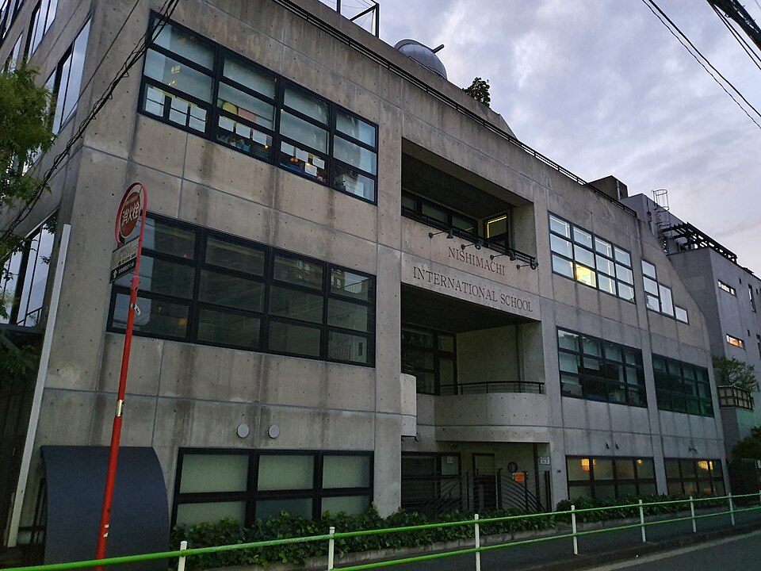

니시마치 인터내셔널 스쿨 교사 건물(도쿄 미나토구 모토아자부) · 사진: Syced / Wikimedia Commons, CC0
니시마치 인터내셔널 스쿨(Nishimachi International School, 도쿄) — K~G9 소규모 학교, G9 이후 고교 진학을 미리 설계하는 법
1. 니시마치 인터내셔널 스쿨은 어떤 학교인가
니시마치 인터내셔널 스쿨은 1949년 개교로 알려진 도쿄의 소규모 국제학교입니다.
· 캠퍼스 — 도쿄 미나토구 모토아자부(元麻布). 아자부·히로오 생활권 한가운데로, 대사관과 외국계 가정이 모여 있는 지역입니다.
· 학년 — 유치부(킨더가튼)부터 G9까지. 고등학교(G10~G12) 과정이 없습니다.
· 규모 — 전교생 약 480명 수준의 소규모 학교로 알려져 있습니다. 한 학년이 작아 선생님이 아이를 개별적으로 아는 편입니다.
· 수업 언어 — 영어. 교육과정은 미국 커먼코어 기준을 바탕으로 운영하는 것으로 알려져 있습니다.
· 일본어 — 전교생이 일본어와 일본 문화를 매일 배웁니다(G9까지). 이 학교의 가장 큰 특징입니다.
도쿄권에서 한국 가정이 자주 비교하는 세 학교의 성격을 나란히 놓으면 이렇습니다.
| 구분 | 니시마치 | ASIJ | 요코하마 YIS |
|---|---|---|---|
| 학년 범위 | K~G9 (고교 없음) | 유치부~G12 | 유치부~G12 |
| 고학년 과정 | 해당 없음 | 미국식 + AP | IB 디플로마 |
| 일본어 | 전교생 매일 필수 | 선택 언어 과목 | 선택 언어 과목 |
| 한국 학생 관문 | G9 이후 진학 설계 | AP 내신·SAT | DP 과목 설계 |
※ 학년 구분·개설 과정·모집 일정은 바뀔 수 있습니다. 학교 요강을 직접 확인하세요. 학비·정원·합격률 등 변동 수치는 이 글에서 다루지 않습니다.
2. 한국(주재원) 학생이 겪는 어려움
· 3~4년 뒤에 한 번 더 지원해야 한다. 가장 큰 차이입니다. G12까지 있는 학교는 한 번 들어가면 졸업까지 가지만, 니시마치는 G9를 마치면 반드시 다른 학교로 옮깁니다. 도쿄 안의 다른 국제학교로 가기도 하고, 미국·영국 보딩스쿨로 나가기도 합니다. 즉 중학교 성적·활동·추천서가 그대로 입시 자료가 됩니다.
· 준비를 시작해야 할 시점이 이르다. 보딩스쿨이나 인기 국제학교는 원서 마감이 G9 가을~겨울입니다. 그 말은 G8 여름에는 이미 목표 학교와 시험 계획이 서 있어야 한다는 뜻입니다. G9에 시작하면 늦습니다.
· 언어가 둘이다. 영어로 수업을 듣는 동시에 일본어를 매일 합니다. 일본어는 장기적으로 큰 자산이지만, 막 전학 온 아이에게는 영어와 일본어를 동시에 올려야 하는 부담이 됩니다.
· 소규모의 양면. 선생님이 아이를 잘 아는 것은 큰 장점이지만, 개설 과목 수가 많지 않아 수학·과학을 앞서 나가는 아이는 학교 안에서 더 올라갈 곳이 없을 수 있습니다.
3. 그래서 이렇게 준비합니다
🗓 G6~G7 — 목표를 “학교 목록”으로 바꿔 두기
막연히 “나중에 좋은 고등학교”가 아니라, 도쿄 안에 남을지 / 보딩으로 나갈지 / 한국으로 돌아올지 세 갈래를 먼저 좁힙니다. 갈래에 따라 준비할 시험이 완전히 달라집니다. 보딩이면 SSAT, 도쿄 내 국제학교면 학교별 배치고사와 인터뷰, 한국 복귀면 특례 요건입니다. (→ 재외국민 특례입학 총정리)
📖 G7~G8 영어과외 — 에세이가 곧 원서다
고교 지원에서 한국 학생이 가장 많이 깎이는 곳이 영어 에세이와 인터뷰입니다. 문법은 맞는데 자기 생각을 구조로 펼치지 못하는 경우가 대부분입니다. 주장 → 근거 → 설명 단락 구조를 먼저 세우고, 읽은 책과 학교 활동을 본인 문장으로 설명하는 연습을 병행합니다. 이 훈련은 지원용이자, 옮긴 학교에서 바로 쓰이는 실력입니다. (→ 국제학교 영어 공부법 · 주재원 자녀 영어과외)
📐 수학과외 — 소규모 학교의 천장을 밖에서 열어준다
수학은 학교 진도와 별개로 선행이 가능한 과목입니다. 학교에서 더 올라갈 과목이 없다면 밖에서 알지브라·지오메트리를 차근히 이어가 두는 편이 낫습니다. 보딩 지원 시 SSAT 수학은 영어보다 점수를 올리기 쉬운 영역이기도 합니다. (→ 알지브라 공부법 · SSAT 완전정복)
🗣 G8~G9 — 인터뷰는 미리, 짧게, 여러 번
인터뷰는 벼락치기가 가장 안 되는 영역입니다. 예상 질문 5~6개를 놓고 한 번에 10분씩, 여러 주에 걸쳐 반복하는 편이 하루 두 시간 몰아 하는 것보다 훨씬 효과적입니다. (→ 국제학교 면접(인터뷰) 준비)
4. 도쿄의 강점 — 시차 없는 화상과외
도쿄는 한국과 시차가 없습니다. 방과 후 시간대를 한국과 똑같이 쓸 수 있어, 해외 도시 중 실시간 화상 1:1을 잡기 가장 편한 곳입니다. 특히 니시마치처럼 지원 서류를 준비해야 하는 경우, 에세이 초안을 화면에 띄워 그 자리에서 함께 고치는 방식이 큰 차이를 만듭니다. 도쿄 생활권 전반의 과외 이야기는 도쿄 국제학교 수학·영어 과외에, 일본 대학까지 보는 경우는 일본 JLPT·EJU 준비에 정리했습니다.
정리
니시마치 인터내셔널 스쿨은 1949년 개교로 알려진 도쿄 모토아자부의 K~G9 소규모 학교입니다. 일본어를 매일 배우는 환경이 강점이지만, 고교 과정이 없어 G9에 한 번 더 지원해야 한다는 점이 준비의 전부를 좌우합니다. ① G6~G7에 진학 갈래 좁히기 ② G7~G8 영어 에세이 구조 ③ 수학은 학교 밖에서 천장 열어두기 ④ G8~G9 인터뷰를 짧게 여러 번 — 이 순서를 시차 없는 화상과외로 관리하시면 됩니다. 30분 무료 상담으로 우리 아이 학년부터 점검해 보세요.